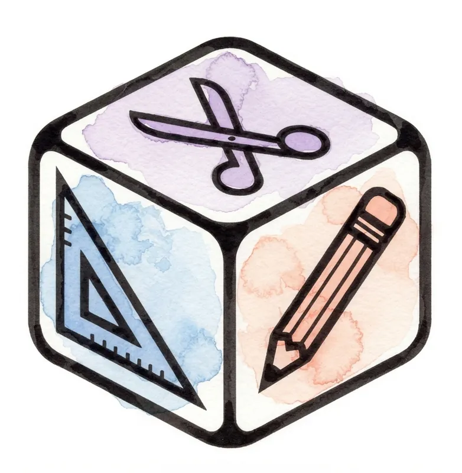

BG Factory — a 100% portable board game editor
BG Factory is a visual editor for creating and playing your own digital board games, shipped as a single self-contained HTML file.
No install, no accounts, no server, no online dependencies: download the file, double-click it in any modern browser, and your game table is ready — editor and data bundled in the same .html.
🚀 Why BG Factory?
- 📦 100% portable — the whole editor lives in one file. USB stick, email, cloud — it works the same wherever you open it.
- ⚡ No install, no accounts — nothing to install, no sign-up, no cloud service. Open the file and start.
- 🎒 Your game travels with you — export a complete copy of all content and settings as JSON, ready to share.
- ✈️ Works offline — once downloaded, it needs no internet connection at all.
- 💾 Local autosave — your game is saved automatically in the browser as you work.
🎯 Ready-to-use game components
- 🃏 Cards — visual editor with image, shape and text layers; two independent faces with animated flip; preset ratios (poker, tarot, square, circular, hexagonal, triangular) or free.
- 🂠 Decks — an ordered, shufflable stack with a configurable reveal area, its own back image, and Shuffle / View contents / Add-to-deck.
- 🎲 Dice — configurable face count or custom value list (numeric or text), own result font, roll animation, enlarged result on double-click.
- 🗺️ Simple boards — square or hexagonal grid with a background colour or image, beveled or flat border, with or without shadow.
- 🖼️ Custom boards — the same advanced visual editor as cards, for bespoke boards and maps at real pixel size.
- 📝 Text boxes with rich formatting (Markdown or HTML).
- 📄 Document viewers — pasted text/Markdown or an embedded web page, as a rulebook always at hand.
🖌️ A full visual editor
- Infinite table with pan and zoom, plus floating panels for components, assets and tags — sort, filter and text-search any column.
- Grouping — combine components into one unit with its own lock, visibility, tooltip and tags; move and edit as one, ungroup any time.
- Linked "Copy" elements — change an original and all its synced copies update on their own.
- Tags — one click selects every element carrying a tag, even cards stored inside a deck.
- Depth/extrusion, per-component title and tooltip with dynamic variables (e.g.
{cards_current}), style clipboard, keyboard shortcuts, stacking-order control.
- Asset panel — upload one file, several, or a whole folder; automatic WebP conversion; an asset in use can't be deleted by accident.
🕹️ Edit mode and play mode, kept apart
- Edit mode — configure components, properties, assets, tags and table layout with every design panel in view.
- Play mode — roll dice, draw and flip cards, move pieces, read tooltips — without risking a change to the design.
- Instant switch between the two, always on the same game — no two separate versions of the state.
- Scripted interactions per component and per action (click, double-click, drag, right-click).
- Movement lock per component or group (never / play-mode only / always), plus hiding pieces from the audience.
🔄 Flexible import/export
- Save downloads a complete copy of the editor with your game embedded inside it — the portable file itself.
- Selective export/import moves individual components, assets and tags between games as JSON.
- On import, add or overwrite, resolve duplicate ids, and get a detailed report on any conflict.
- Saves from earlier versions migrate automatically; the editable game title is the default file name.